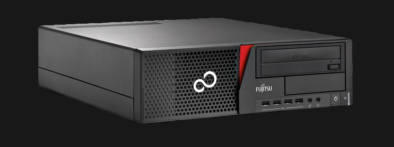
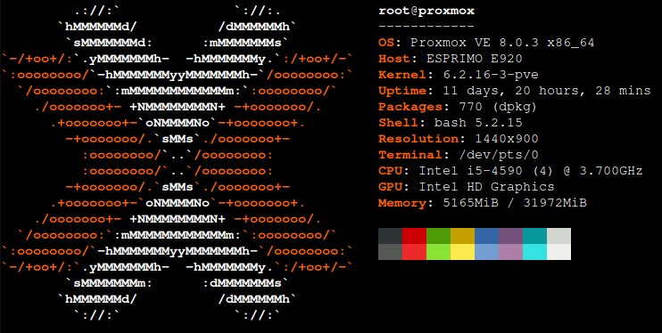

BytesOfProgress
My new Homeserver running Proxmox
27th October 2023 / 12:30 PM
Since a few days I have a "homeserver"!
It is a Fujitsu Esprimo E920 with an Intel Core i5-4590 3.7 GHz and 32 GB RAM. It is an SFF-PC. It is not as big as an enterprise-server, but has enough physical space to add for example new hard drives to it.
It is running Proxmox as its operating system, which is a type 1 Hypervisor. It is currently hosting this website, a fileserver, pihole and much more. This is all handled with multiple domains / subdomains.
back